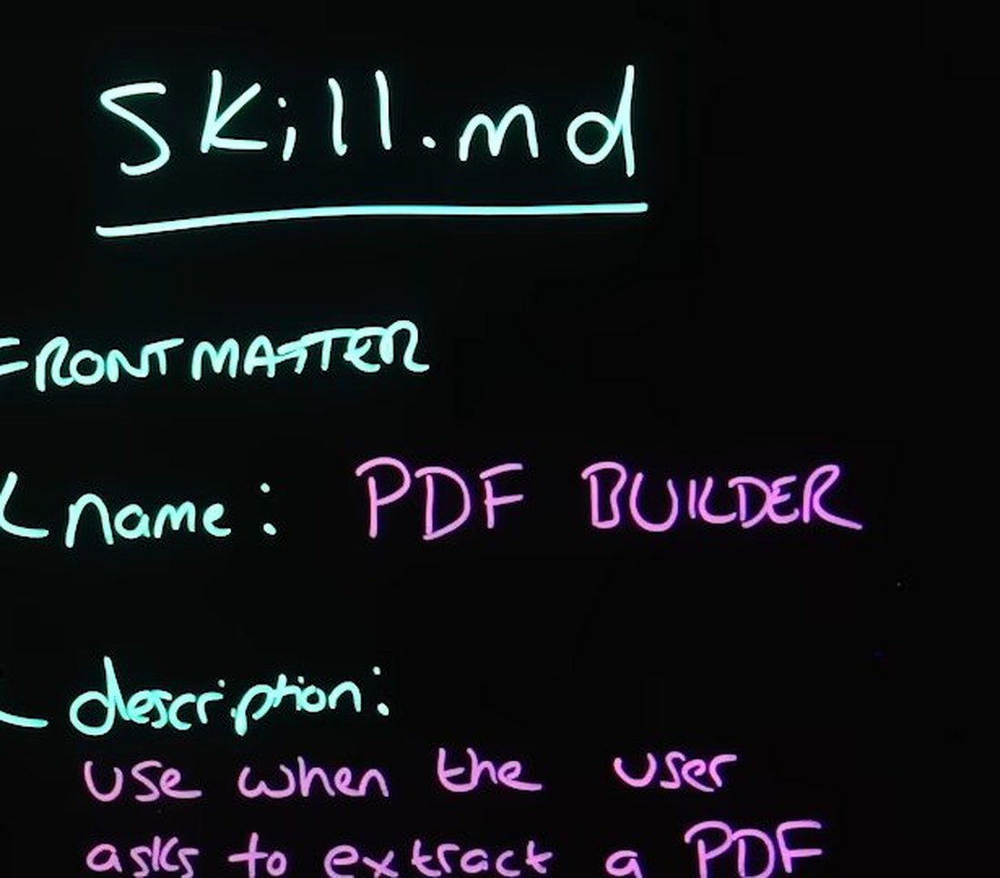
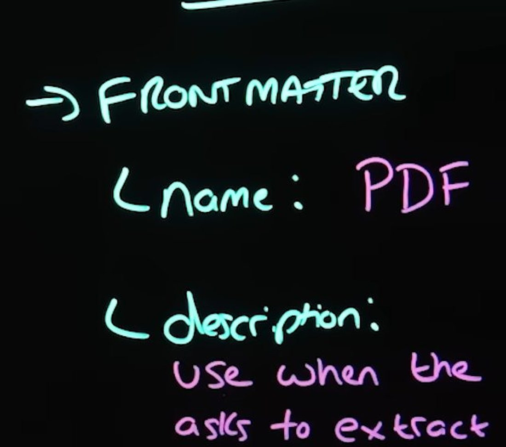
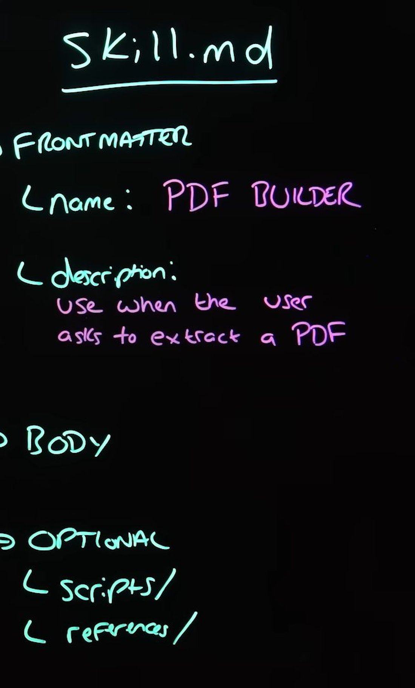
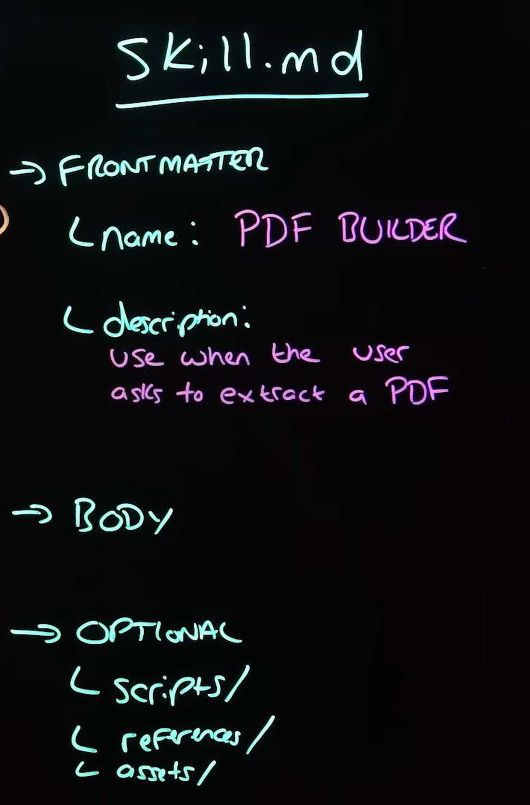
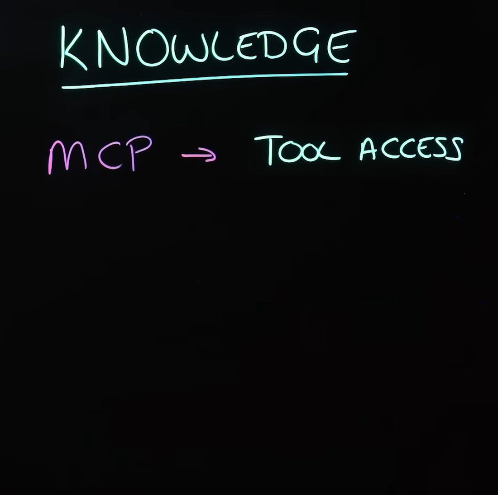
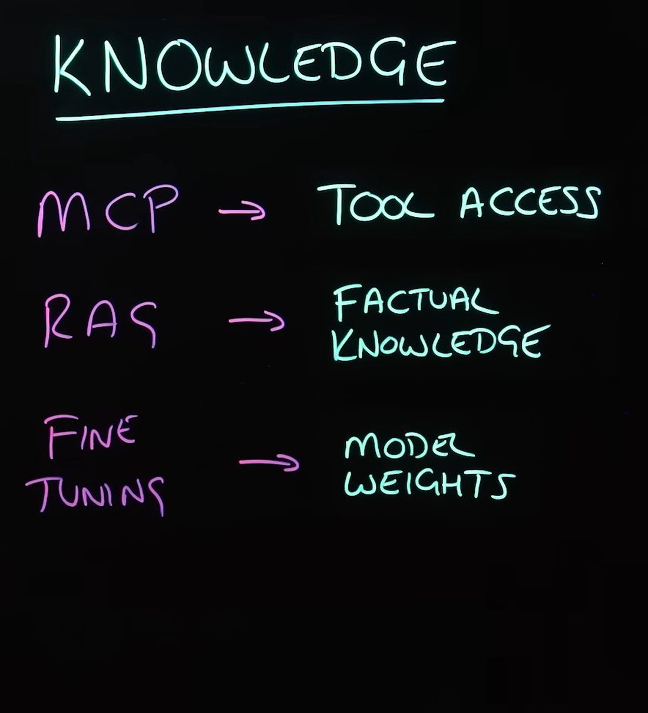
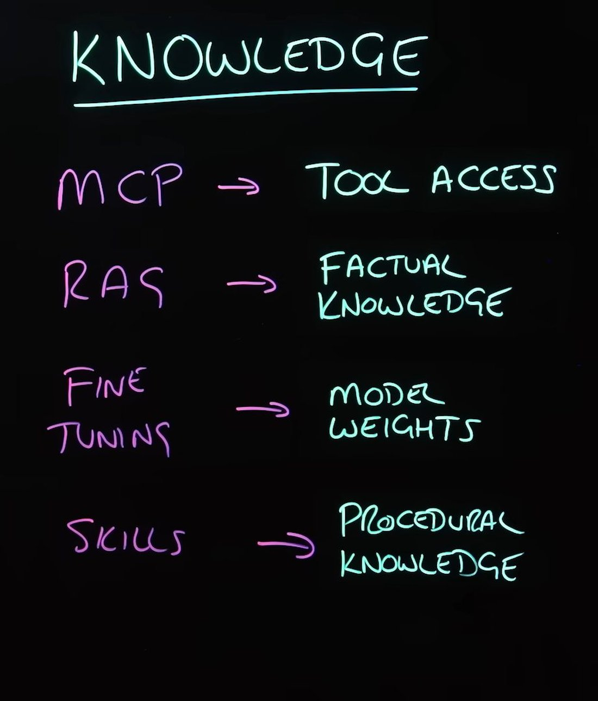
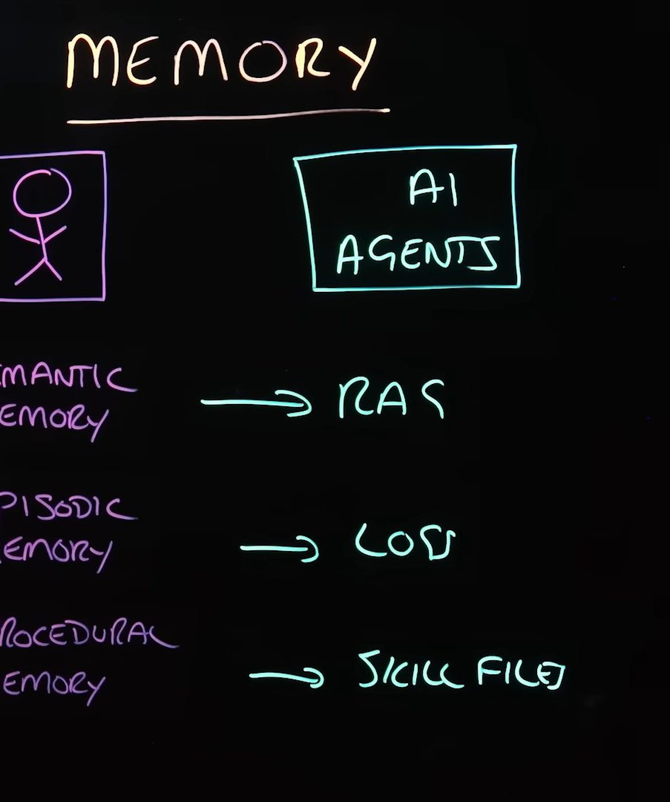
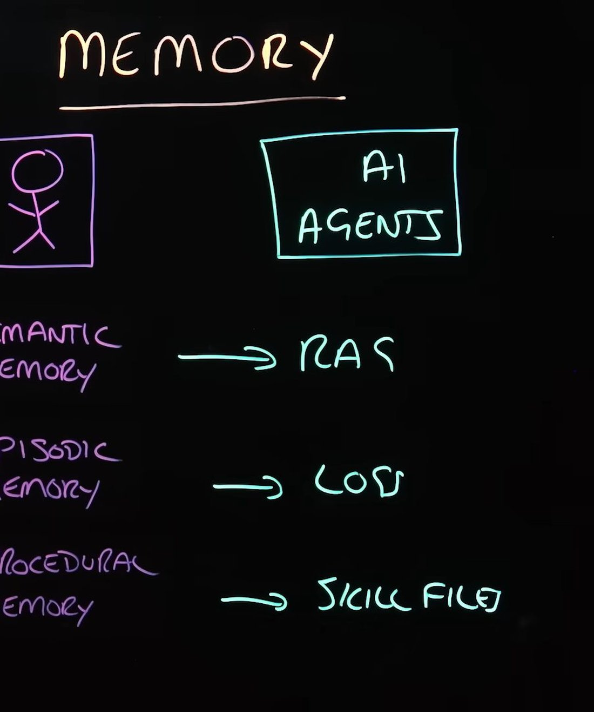

IBM 用 12 分钟讲清一件事：给智能体补上「怎么做」的流程知识，靠的不是再塞提示词，而是一个文件夹里的 Markdown 文件。把字幕里的字段、目录、加载层级和安全提醒，拆成能直接照做的清单。
适合谁：要把固定流程交给智能体、又不想每次手写几十步提示词的人。技能用普通 Markdown 写，能版本控制、易更新、可跨平台迁移00:08:10。
不适合谁：只想让智能体查事实或调外部 API 的人——那两件事分别由 RAG 和 MCP 负责00:06:45。视频里没说单个技能的文件大小上限，也没给具体平台的安装路径。
先建一个技能文件夹，在里面放 SKILL.md。作者说它的格式「简单得有点好笑」：就是一个 Markdown 文件00:01:41，用来装流程性知识00:01:26。
文件顶部写 YAML frontmatter00:01:58，至少放 name 和 description 两个字段00:02:21。author、version 可加，但不是必填00:02:57。

frontmatter 下面写正文：分步工作流、规则、输入输出示例，用普通 Markdown 就够00:03:16。
| 要填的位置 | 视频里的写法 | 为什么这么填 |
|---|---|---|
name | 示例值「PDF Builder」00:02:42 | 用来标识这个技能00:02:24 |
description | 示例：「use this when the user asks to extract a PDF」00:02:50 | 它是触发条件，决定技能何时被调用00:02:35 |
| 正文 body | 分步工作流、规则、输入输出示例00:03:16 | 智能体真正执行时要读的东西 |
scripts/ | 放可执行的 JavaScript、Python 或 Bash00:03:42 | 可选目录，智能体能直接运行 |
references/ | 放补充文档，智能体判断需要时才加载00:03:51 | 可选目录，避免一次塞满上下文 |
assets/ | 放模板、数据文件等静态资源00:04:02 | 可选目录，用时才取 |


别把 description 写成泛泛介绍。视频说，技能匹配由模型自己的推理完成00:05:36，所以好描述直接决定它会不会被用上00:05:45。
作者把渐进披露拆成三层00:04:41。第一层只加载每个技能的 name 和 description00:04:53，相当于一份技能目录；即使装了 100 个 技能，开头也不会占满上下文00:05:01。

第二层：请求命中描述后，才把完整 SKILL.md 正文读进上下文00:05:21。第三层：scripts/、references/、assets/ 里的资源，到具体任务真的需要时才加载00:06:00。
| 方案 | 视频里的分工 | 关键限制 |
|---|---|---|
| MCP | 工具访问、调用外部 API00:06:45 | 不告诉智能体何时调用、调用后做什么00:06:57 |
| RAG | 检索事实知识，运行时取相关片段00:07:10 | 是参考资料，不教智能体做事00:07:22 |
| 微调 | 把知识固化进模型权重00:07:33 | 永久但昂贵，模型换了要重做00:07:40 |
| 技能 | 流程知识：按什么顺序、带什么判断去做事00:08:05 | 常和 MCP 搭配：MCP 给能力，技能给判断00:08:27 |


标准方面，视频说 SKILL.md 是开放标准，发布在 agent skills.io，采用 Apache 2.0 许可00:08:45，并举出 Claude Code、OpenAI Codex 等已在采用00:09:00。

作者还用记忆做类比：语义记忆对应检索和知识库，情景记忆对应对话日志，程序性记忆对应技能文件00:10:12。

技能可以带脚本，而这些脚本能访问文件系统、环境变量和 API key00:10:29。作者提醒：智能体运行它时，通常是在你本机执行命令00:10:50。

视频说公开技能审计中见过提示注入、工具投毒和隐藏恶意软件00:10:58。作者的建议是：像对待软件依赖一样对待技能安装，先弄懂它做什么，再在本机使用00:11:18。
| 坑 | 怎么避 |
|---|---|
| 把几百个技能全文塞进启动上下文 | 只在启动时放 name + description00:04:53；正文命中再读00:05:21 |
| description 写成泛泛介绍 | 写成触发条件，含「when the user asks…」这类具体场景00:02:50 |
| 把补充文档和模板全塞进正文 | 分别放进 references/ 与 assets/，按需加载00:03:51 |
| 用 RAG 教步骤、用 MCP 教流程 | 按分工来：RAG 查事实00:07:10，MCP 调工具00:06:45，技能写流程00:08:05 |
| 为流程知识去做微调 | 视频说微调贵且模型变化要重做00:07:40；技能是普通文件，更新更容易00:08:10 |
| 装公开技能不审脚本 | 脚本能碰文件系统、环境变量、API key00:10:29；装前先读懂00:11:18 |
| 说法 | 视频怎么说 | 本文口径 |
|---|---|---|
| 采用范围 | 开场说「几乎所有主流 AI 编程平台都采用了这个开放标准」00:00:04 | 视频只举了 Claude Code、OpenAI Codex 等例子00:09:00；「几乎所有」不下结论 |
| 跨平台可用 | 说为一个平台做的技能能用在任何支持该规范的平台00:09:05 | 依赖对方是否支持规范；视频没给兼容清单，不下结论 |
| 公开技能风险比例 | 说审计发现公开技能「经常」含提示注入、工具投毒、恶意软件00:10:58 | 视频未给样本量与统计出处，只采纳「装前审查」这个动作 |
SKILL.md00:01:41。name 与 description00:02:21；作者、版本可选。description 写触发条件，不是简介00:02:35。scripts/ 脚本00:03:42、references/ 文档00:03:51、assets/ 资源00:04:02。